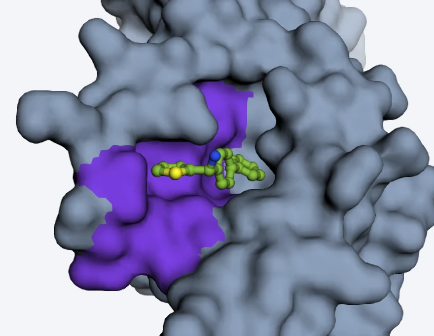

Which human proteins hide a drug pocket?
A cryptic pocket is closed in the structures we have and opens when a drug arrives, so docking and screening miss it. This catalogue predicts where such pockets are in 18,336 human proteins and shows which are worth a look.
Try or browse the hidden pockets

Screen the proteins
A protein has to pass gates. Start from a preset, then switch gates on and off: the bars show how many proteins are left after each gate, and why the others dropped out. Searching switches the gates off, so a protein you care about is never hidden.
How sure the model is that the site is a pocket. In the High band about half of the residues it names are right on proteins it never saw.
Closed: no cavity there yet (under 40 ų). Open: a cavity is already visible. Ligand there: a drug-like molecule already sits at the site.
The gene has a strong link to a disease (Open Targets score of 0.5 or more). Only proteins above the lowest confidence band, with a usable structure, were looked up.
Its strongest disease is recessive: usually both copies are broken, so a drug would have to restore the protein, not block it.
No approved drug and no potent compound has been reported for it yet (Pharos level Tbio or Tdark).
A free native cysteine has its sulfur within 4.5 Å of a pocket residue: a handle for labeling, tethering or a covalent ligand. Geometry only.
A cysteine in reach that CysDB, a lysate screen, found ligandable. A quarter of cysteines were measured; the rest are unknown.
Who is left
| Protein | Confidence | Cysteine | Disease link | Drugged? |
|---|
Which cancer mutations add a handle for a covalent drug? exploratory
| Protein | Change | Tumours | Where | Ligand there |
|---|
The other direction: a mutation removes the cysteine a drug binds
| Protein | Change | Drug | Where | Evidence |
|---|
How this was made, and the chance level
Does the pocket open? Ask a simulation.
A prediction says where a pocket might be. A simulation lets the protein move in water and shows whether it opens on its own.
- Shake it. Put the protein in water at body temperature and let it move for 40 nanoseconds. Do this ten times from the same start.
- Watch the pocket. Count it as open when a cavity next to its residues grows by 40 ų or more.
- Compare. Take 20 to 70 other patches of the same protein with the same number of residues, as buried and as empty as the pocket was. A real pocket should open more than they do.
Why other patches? Any loose patch of a protein opens a little when it moves, so one pocket opening proves nothing. Patches of the same size, as buried and as empty at the start, show how much opening is ordinary. The pocket stands out only if it opens more than most of them.
| Protein | The pocket opened in | Against similar patches of the same protein | What it says |
|---|
The same results as the statistics (for readers who want them)
Does a molecule stay in the pocket? exploratory
All twenty simulations, and the rule
| Molecule | Simulation | Stayed near its docked position | Share of the time within 6 Å | Typical distance from the docked pose |
|---|
How far to trust a row
Confidence, measured
Each bar is the share of the residues the model named that really were part of a cryptic pocket, on proteins it never saw.
Can a lab test it as it is?
About 1 in 8 known pockets has a cysteine that thiol labelling, one common test, can reach without engineering. For the rest, one would have to be introduced.
Most ligand sites are already open
On 412 ligand sites in structures deposited after the labels were frozen. The predicted pocket covers 73%, 33% and 34% of them (a random patch: 4 to 5%).
What it cannot do
- It sees one protein chain at a time. If a pocket forms only where two chains meet, the model cannot see it. In eIF2B beta, for example, none of the 32 residues it predicts is within 10 Å of the drug ISRIB, which binds between two subunits.
- A prediction is a place to test, not a result. A closed site with high confidence makes a hidden pocket more likely, not certain: in the High band about half of the residues the model names are right on proteins it never saw. No drug is predicted.
- A disease link describes the gene, not the pocket. It says the gene matters in a disease, not whether a drug should block the protein or boost it.
- The simulations show that a pocket can open, not that a drug fits. They have no drug in them, use one force field, and run ten times for 40 ns per protein.
Covered: 18,336 reviewed human proteins of 30 to 1,024 residues, each once, from an experimental structure where one exists and an AlphaFold model otherwise.